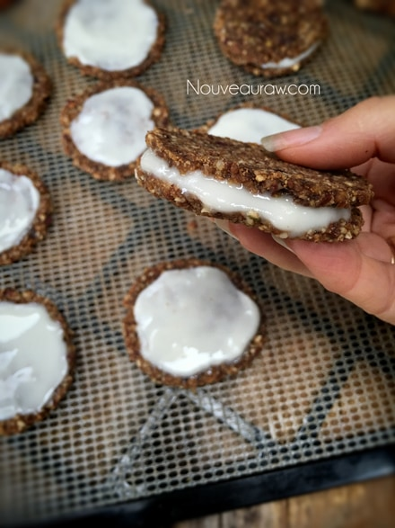
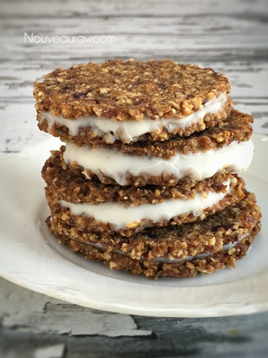

Mince Pie Cookies with Coconut Icing

~ raw, vegan, gluten-free ~
I love these wafer thin cookies. They are so festive as they pop with the bright colors of white and red. The cookies are firm and dry to the touch but have a bit of a chew to them as well.
They taste wonderful at room temp, or chilled in the freezer, giving them a bit of a snap. These cookies can be made up ahead of time, reducing the holiday stress as you scurry from place to place trying to be prepared for friends and family. And who couldn’t use a little of that?!
Do you ever have those friends or family members who spontaneously stop by? Impress them by pulling these out of the freezer, arranging them on a plate and serving this delight with a smile. Instant healthy treats that taste so good. ;)
For the icing, I used one ingredient… raw coconut butter! The only prep work is to soften it by placing the jar in a hot water bath. The next step is to spread it on the top of the cookie. Can’t get too much easier than that. Word of caution.. go light on the amount that you use on each cookie. I used just 1 teaspoon worth. Any more and you risk the coconut flavor overtaking in the flavor department.
Once the icing firms up, the cookies can be stacked on a plate, just like you see in the photo without any worries of them sticking to one another. Should the room temperature surpass 76 degrees (F), there is a chance that the icing will start to soften. And if the room gets that warm, grab the plate of cookies and go outside because you both could use some crisp, fresh air. :)
Another fun way to serve these is by making sandwiches out them with the icing in the center. No matter how you serve them, do it with love and joy. :) Many blessings, amie sue
Yields 37 cookies (4 tsp per cookie)
Wet Ingredients:
- 4 apples, chopped small (roughly 6 cups)
- 3 cups Medjool dates, pits removed (soak if really dry for about 10 mins in the orange juice)
- 1 cup orange juice and the zest from the skin of 1 orange
- 1 Tbsp pumpkin spice
- 1/2 tsp Himalayan pink salt
Dry Ingredients:
- 1/2 cup raw sunflower seeds, soaked
- 2 cups raw chopped almonds, soaked
- 3 cups raw chopped pecans, soaked
- 1 cup raw pumpkin seeds, soaked
- 1 cup dried cranberries or raisins or dried apples
Topping:
- Raw coconut butter, softened
- Minced dried cranberries
Preparation:
- Combine all the wet ingredients in the food processor and using your “S” blade, blend everything together leaving the batter a little chunky.
- Add the nuts, seeds and dried fruit, processing it to a slight paste.
- Using a cookie scoop, place drops of cookies on the teflex sheets that come with your dehydrator.
- If you don’t have those you can use parchment paper, but don’t use wax paper because the cookies will stick to it.
- Lay a piece of plastic wrap over the cookies and with a flat-bottomed glass, press the cookies flat with an even pressure.
- Once all done, peel off the plastic wrap.
- Dehydrate at 145 degrees (F) for 1 hour, then reduce to 115 degrees (F) and continue to dry for up to 24 hours.
- Part way through, once dry enough, flip the cookies over onto the mesh sheet, peel off the teflex, and continue to dry.
- The cookies will be dry to the touch, firm but a little chewy when you eat them.
- Decorating option: soften raw coconut butter by placing the jar in a hot water bath, just long enough for it to melt.
- Spread 1 tsp worth on each cookie, don’t use too much or the taste will overtake the cookie.
- Place the cookies on a tray that fits in the fridge or freezer to set up the coconut butter.
- Another cookie idea is to take two cookies and sandwich them together with the coconut butter in the center.
- These cookies and frosting will stay hard at room temp but I recommend storing them in the fridge or freezer for extended shelf life.
Culinary Explanations:
- Why do I start the dehydrator at 145 degrees (F)? Click (here) to learn the reason behind this.
- When working with fresh ingredients it is important to taste test as you build a recipe. Learn why (here).
- Don’t own a dehydrator? Learn how to use your oven (here). I do however truly believe that it is a worthwhile investment. Click (here) to learn what I use.


© AmieSue.com